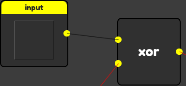

WebGates is a free, online logic gate simulator.
Right clicking anywhere will bring up this menu. Use this to place gates anywhere on the screen!
Some mouses or touchpads don't have a right click button. In that case you can use alt or ctrl keys at the same time as clicking to simulate a right click.
To connect gates together, click on an output node of the first gate. A line should appear from the node to the cursor. Then click on an input of another gate - this will connect the two together. 
You can click on the square inside an input gate to turn the gate on or off. An output gate will display the output of the gate that is connected to it.
Now you know all about how to use this website! There is no limit to how large you can make your creations - apart from your screen size. You can access the site options from the menu in the top-left corner.
(also, if you make a loop it will crash the website. Please try not to do that.)
Change theme colour:
ver. 1.1